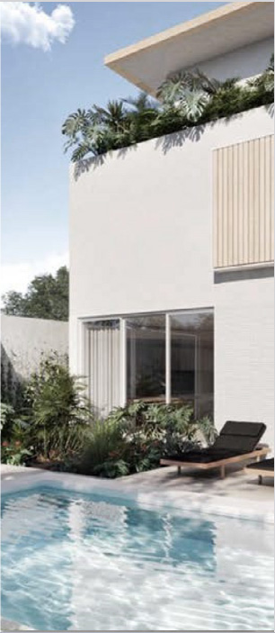
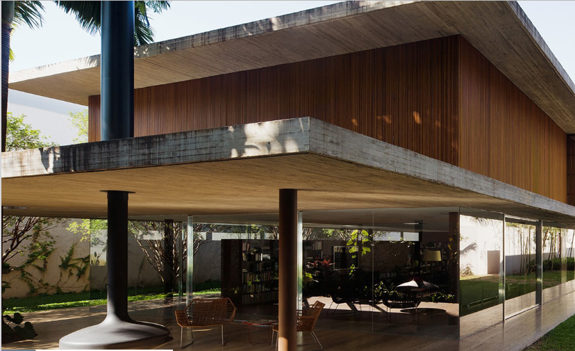
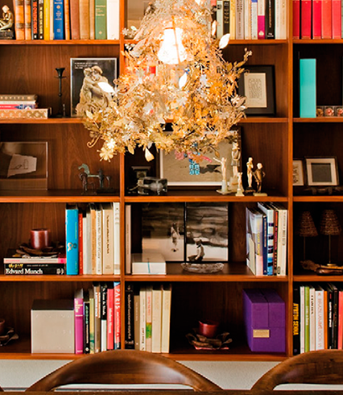
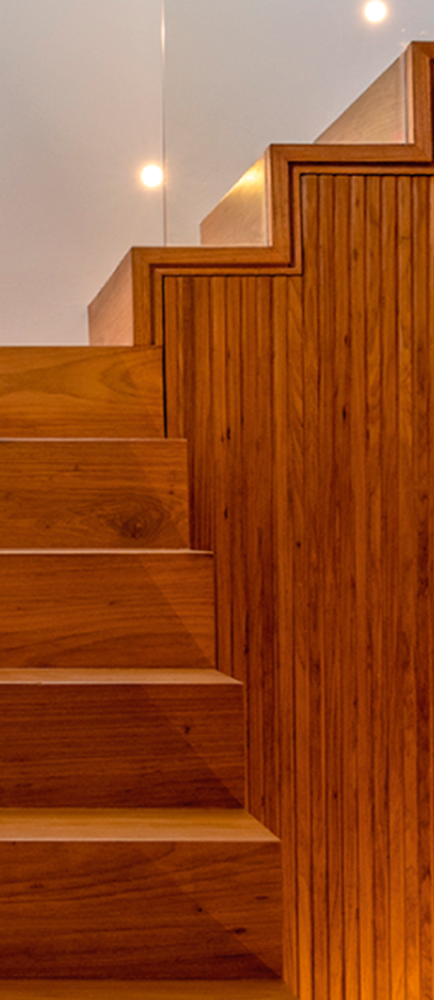
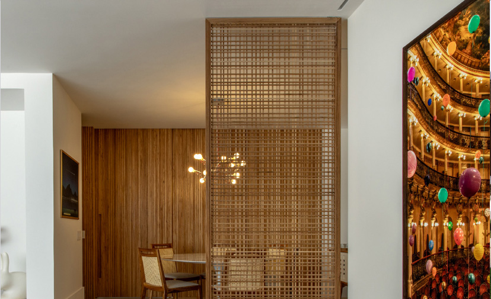
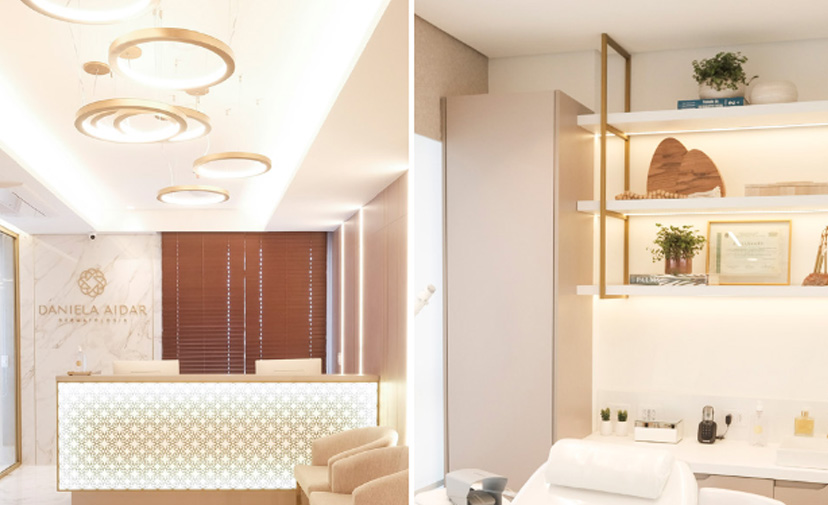
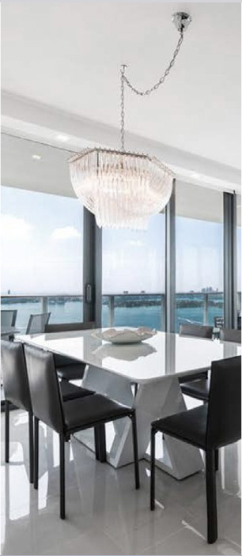

Arquitetura para viver bem
Espaços que fazem sentido.
Forma, luz e natureza em diálogo com a vida de quem ocupa cada lugar.
Conheça os projetos
01 / Arquitetura em perspectiva
01 — O estúdio
Cada detalhe conta uma história.
Na arquitetura, o desenho é só o começo. Materiais, proporções e luz criam ambientes que acolhem as pessoas e acompanham sua rotina.

Do primeiro traço ao último detalhe.
02 — Seleção visual
Projetos em foco.
Explore diferentes maneiras de pensar os espaços.



4 projetos exibidos
03 — Vamos conversar
Seu próximo espaço começa com uma ideia.
Enviar um e-mailSite fictício criado como modelo para aula de Coding. Substitua o e-mail ao adaptar o projeto.